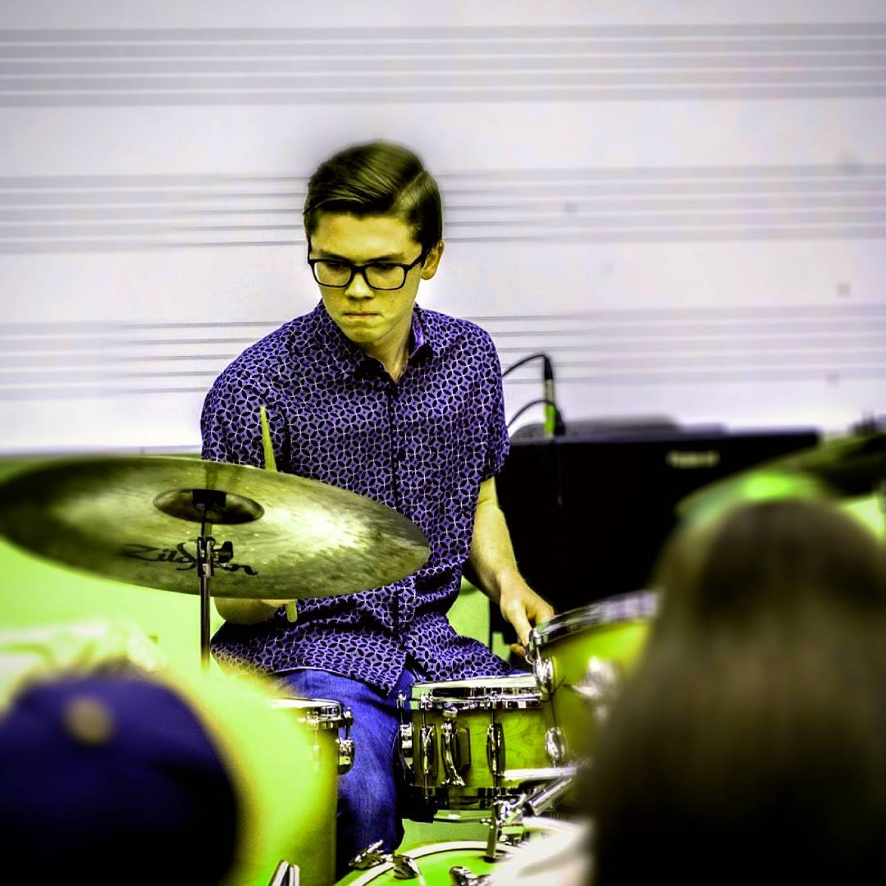

Josh Platt
5185 Ponce De Leon Blvd,
Coral Gables,
FL 33146
jxp1403@miami.edu
Facebook
Education

About Myself
I aspire to meet new people, travel the world, and touch people through my music.
I have a great appreciation for every genre of music because I believe that each has
its own special qualities and I love empathizing with what the musician or composer
is trying to convey. Music is the true definition of equality in that everyone
has an opportunity to express what they wish. My love for music began at a very
young age when I started playing the drums. I took lessons at the age of seven,
participated in multiple music camps, and had my first performance when I was
nine years old. I continued to perform locally as a middle school student and my
first major performance in high school, playing in Macy’s Thanksgiving Day Parade,
changed my life and gave me memories that I’ll never forget. Performing at the
Berklee College of Music Jazz Festival and the Savannah Jazz Festival provided
a way for me to study with world renowned musicians such as Scotty Barnhart,
Bob Reynolds, Wycliffe Gordon, Matt Kane, and many more who passed along their
knowledge and wisdom.
Work Experience
- Busch Gardens, Tampa, Florida — Musician
- Chaka (Fusion Band), Tampa, Florida — Founding Member and Manager
- The Danny Bub Jazz Combo, Tampa, Florida — Band Member
- Kayla Ember Band, Tampa, Florida — Band Member
- Matt Winter Entertainment, Tampa, Florida — Band Member
- Private Lessons, Tampa, Florida — Instructor
Class Schedule
|
Monday |
Tuesday |
Wednesday |
Thursday |
Friday |
|
Music Theory |
Jazz History |
Music Theory |
Jazz History |
Jazz Piano |
|
Jazz Combo |
Drumset Improv |
Jazz Combo |
Drumset Improv |
Jazz Forum |
|
Bass Desires |
Web Design |
Bass Desires |
Web Design |
|
Hobbies
- Music
- Cooking
- Building
- Working on Cars
- Coffee
Main